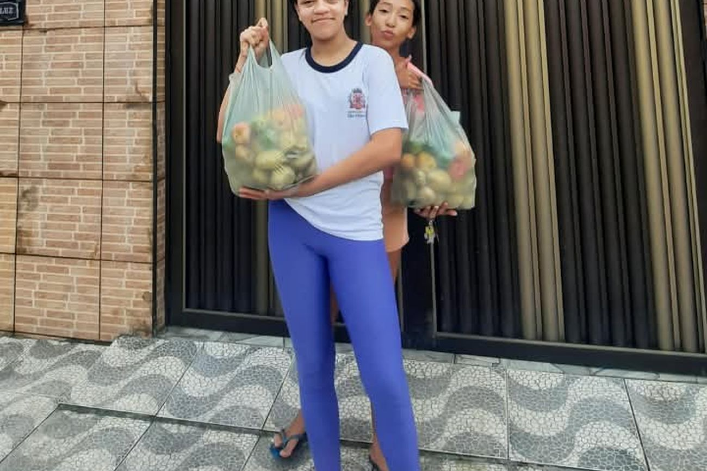

· Feirinha da Criança
Entrega de julho atende 250 famílias em dois dias
Com a ajuda de voluntários e de pequenos comércios da região, a distribuição de alimentos aconteceu em São Vicente e em Praia Grande.

A entrega de julho da Feirinha da Criança aconteceu em dois dias, atendendo cerca de 250 famílias em São Vicente e em Praia Grande. A divisão em dois dias, com horários combinados por grupo, evitou fila na porta da sede.
As cestas levaram alimentos não perecíveis, frutas, legumes e verduras. Boa parte das frutas e verduras veio de pequenos comércios da região, que separam o que podem no dia anterior à distribuição.
Oito voluntários trabalharam na montagem das cestas na véspera e mais seis ajudaram na entrega. Sem esse grupo, a distribuição levaria o dobro do tempo.
A próxima entrega acontece no mês seguinte, na mesma sede. Quem quiser doar alimentos pode deixar na sede de segunda a sexta, das 9h às 17h.